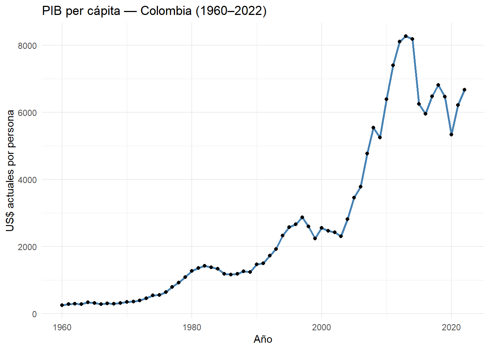
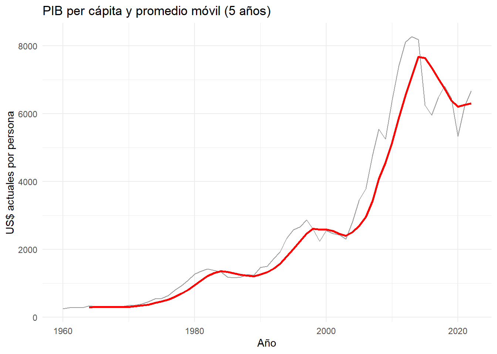
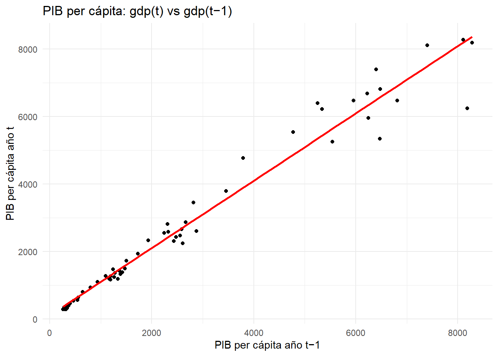
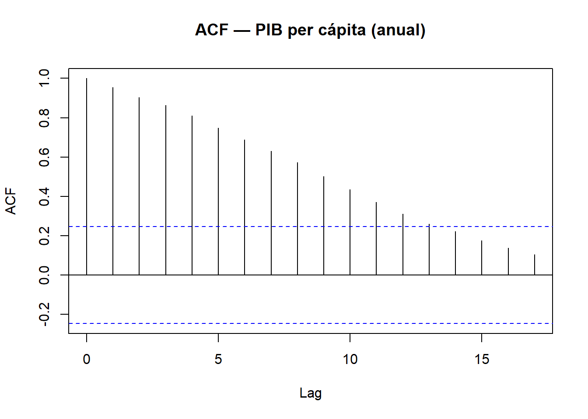
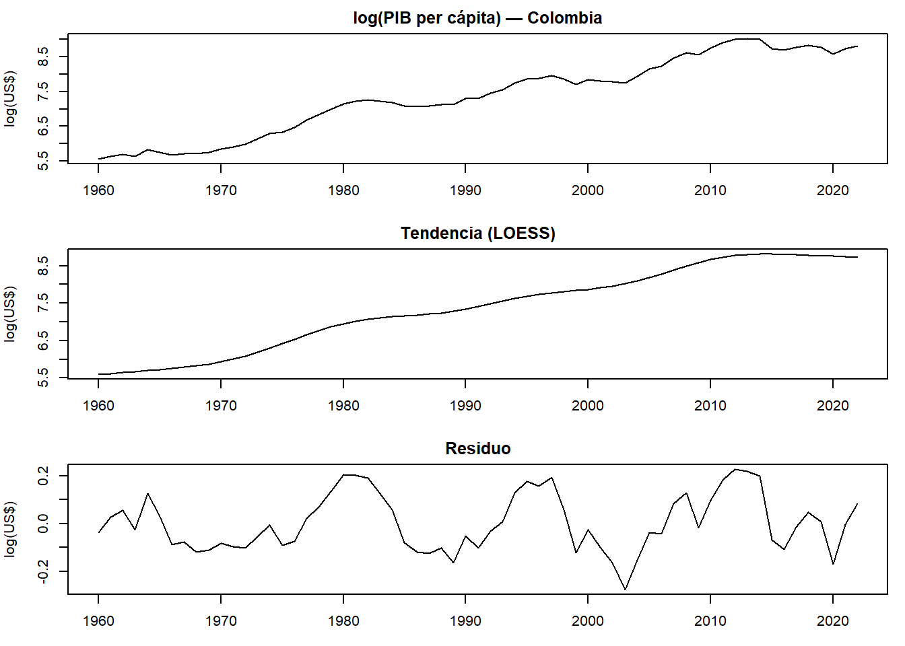
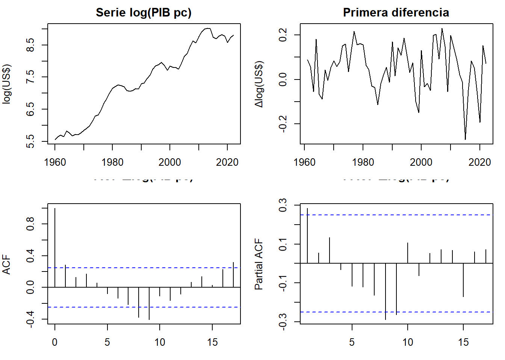

Capítulo 2 Unidad 2 — Análisis temporal (PIB per cápita)
En esta unidad se realiza un análisis exploratorio de PIB per cápita (Banco Mundial, 1960–2022) para países LATAM (COL, MEX, BRA, CHL, ARG), con: - Promedio móvil (suavizamiento), - Rezagos y ACF (dependencia temporal), - Discusión de estacionalidad (serie anual, no hay estacionalidad intra-anual).
Nota: El API del Banco Mundial está devolviendo intermitentemente “indicator not found” para CO₂. Para no bloquear la entrega, la serie principal de la Unidad 2 será PIB per cápita (
NY.GDP.PCAP.CD). Al final añadimos un chunk opcional que intenta traer CO₂ per cápita (EN.ATM.CO2E.PC) con códigos de país en mayúsculas; si funciona, se muestra un gráfico PIB–CO₂ como “tiempo variable complementaria”. Si no, la compilación no se rompe.
2.2 Descarga y preparación de PIB per cápita (serie estable)
# Descargar PIB per cápita (US$ actuales) por país, garantizando MAYÚSCULAS
paises <- c("COL","MEX","BRA","CHL","ARG")
years <- 1960:2022
get_gdp_pc <- function(cc) {
WDI(country = toupper(cc),
indicator = c(gdp = "NY.GDP.PCAP.CD"),
start = min(years), end = max(years))
}
lst_gdp <- lapply(paises, get_gdp_pc)
dat_gdp <- bind_rows(lst_gdp)
# Limpiar y ordenar
dat_gdp <- dat_gdp %>%
transmute(country, iso2c, iso3c,
year = as.integer(year),
gdp) %>%
arrange(country, year)
# Verificación rápida
stopifnot("gdp" %in% names(dat_gdp))
head(dat_gdp)## country iso2c iso3c year gdp
## 1 Argentina AR ARG 1960 778.2517
## 2 Argentina AR ARG 1961 971.3380
## 3 Argentina AR ARG 1962 870.2175
## 4 Argentina AR ARG 1963 852.9724
## 5 Argentina AR ARG 1964 1176.2009
## 6 Argentina AR ARG 1965 1281.8334## [1] 1960 20222.3 Serie principal (Colombia) y gráfico base
gdp_col <- dat_gdp %>%
filter(country == "Colombia") %>%
arrange(year)
ggplot(gdp_col, aes(year, gdp)) +
geom_line(linewidth = 1, color = "steelblue") +
geom_point(size = 1.5) +
labs(title = "PIB per cápita — Colombia (1960–2022)",
x = "Año", y = "US$ actuales por persona") +
theme_minimal()
2.4 Promedio móvil (suavizamiento)
gdp_col <- gdp_col %>%
mutate(ma5 = zoo::rollmean(gdp, k = 5, fill = NA, align = "right"))
ggplot(gdp_col, aes(year)) +
geom_line(aes(y = gdp), color = "gray60") +
geom_line(aes(y = ma5), color = "red", linewidth = 1) +
labs(title = "PIB per cápita y promedio móvil (5 años)",
x = "Año", y = "US$ actuales por persona") +
theme_minimal()## Warning: Removed 4 rows containing missing values or values outside the scale range (`geom_line()`).
2.5 Rezagos y ACF (dependencia temporal)
gdp_col <- gdp_col %>%
mutate(gdp_lag1 = dplyr::lag(gdp, 1))
ggplot(gdp_col, aes(gdp_lag1, gdp)) +
geom_point() +
geom_smooth(method = "lm", se = FALSE, color = "red") +
labs(title = "PIB per cápita: gdp(t) vs gdp(t−1)",
x = "PIB per cápita año t−1", y = "PIB per cápita año t") +
theme_minimal()## `geom_smooth()` using formula = 'y ~ x'## Warning: Removed 1 row containing non-finite outside the scale range (`stat_smooth()`).## Warning: Removed 1 row containing missing values or values outside the scale range (`geom_point()`).
ts_gdp <- ts(gdp_col$gdp, start = min(gdp_col$year), frequency = 1)
acf(ts_gdp, main = "ACF — PIB per cápita (anual)")
2.6 Estacionalidad (discusión)
La serie es anual (frecuencia 1), por lo que no existe estacionalidad intra-anual. La dinámica observable es de tendencia/ciclos de largo plazo. Para estacionalidad clásica se requerirían datos mensuales o trimestrales. ## Tiempo como variable complementaria: PIB vs CO₂
# Tiempo como variable complementaria: PIB vs CO₂
show_co2_plot <- FALSE
# Intento 1: CO₂ per cápita directo por país (códigos MAYÚSCULAS)
safe_get_pc <- function(cc) {
try(
wb_data(
indicator = c(co2 = "EN.ATM.CO2E.PC"),
country = toupper(cc),
start_date = min(years),
end_date = max(years),
return_wide = TRUE
),
silent = TRUE
)
}
lst_co2 <- lapply(paises, safe_get_pc)
# Validar que al menos uno devolvió 'co2' con datos no-NA
valid_frames <- lapply(lst_co2, function(x) {
is.data.frame(x) && "co2" %in% names(x) && any(!is.na(x$co2))
})
if (any(unlist(valid_frames))) {
co2_ok <- bind_rows(lst_co2[unlist(valid_frames)]) %>%
transmute(country, iso2c, iso3c,
year = as.integer(date),
co2) %>%
arrange(country, year)
# Unir con PIB
dat_join <- inner_join(co2_ok, dat_gdp,
by = c("country","iso2c","iso3c","year"))
if (nrow(dat_join) > 0) {
show_co2_plot <- TRUE
co2_countries <- intersect(unique(dat_join$country), unique(dat_gdp$country))
# message("CO₂ disponible para: ", paste(co2_countries, collapse = ", "))
ggplot(dat_join %>% filter(country %in% co2_countries),
aes(gdp, co2, group = country, color = year)) +
geom_path(linewidth = 1) +
scale_x_log10() +
labs(title = "PIB per cápita vs CO₂ per cápita (si API responde)",
x = "PIB per cápita (US$ actuales, log)",
y = "CO₂ per cápita (t/persona·año)") +
theme_minimal()
}
}
if (!show_co2_plot) {
message("No se pudo obtener CO₂ per cápita en este intento; el análisis principal usa PIB per cápita.")
}## No se pudo obtener CO₂ per cápita en este intento; el análisis principal usa PIB per cápita.# Descomposición (anual sin estacionalidad), estacionariedad y diferenciación
# Cargar paquetes (asegúrate de tenerlos instalados previamente)
library(tseries)
library(urca)
library(dplyr)
# 1) Serie de Colombia en log (control de variabilidad)
if (!exists("gdp_col")) {
gdp_col <- dat_gdp %>%
filter(country == "Colombia") %>%
arrange(year)
}
gdp_col <- gdp_col %>% mutate(log_gdp = log(gdp))
ts_log <- ts(gdp_col$log_gdp,
start = min(gdp_col$year, na.rm = TRUE),
frequency = 1) # anual ⇒ sin estacionalidad
# 2) "Descomposición" compatible con frecuencia 1:
# Tendencia por LOESS + Residuo = log(PIB) - Tendencia
df_loess <- data.frame(year = gdp_col$year, log_gdp = as.numeric(ts_log))
fit <- loess(log_gdp ~ year, data = df_loess, span = 0.3, degree = 1)
trend <- ts(predict(fit, newdata = df_loess),
start = start(ts_log), frequency = frequency(ts_log))
remainder <- ts_log - trend
# Gráfico de los tres componentes
op <- par(mfrow = c(3,1), mar = c(3,4,2,1))
plot(ts_log, main = "log(PIB per cápita) — Colombia", ylab = "log(US$)")
plot(trend, main = "Tendencia (LOESS)", ylab = "log(US$)")
plot(remainder, main = "Residuo", ylab = "log(US$)")
par(op)
# 3) Estacionariedad (log nivel)
adf_log <- tseries::adf.test(na.omit(ts_log), k = 1) # H0: raíz unitaria
kpss_log <- urca::ur.kpss(na.omit(ts_log), type = "tau") # H0: estacionaria (tendencia)
list(
ADF_p_value_log = adf_log$p.value,
KPSS_stat_log = kpss_log@teststat,
KPSS_critical_log = kpss_log@cval
)## $ADF_p_value_log
## [1] 0.4985886
##
## $KPSS_stat_log
## [1] 0.1110845
##
## $KPSS_critical_log
## 10pct 5pct 2.5pct 1pct
## critical values 0.119 0.146 0.176 0.216# 4) Diferenciación (Δlog ⇒ aprox. crecimiento %)
diff_log <- diff(ts_log)
op <- par(mfrow = c(2,2), mar = c(3,4,2,1))
plot(ts_log, main = "Serie log(PIB pc)", ylab = "log(US$)")
plot(diff_log, main = "Primera diferencia", ylab = "Δlog(US$)")
acf (diff_log, main = "ACF Δlog(PIB pc)")
pacf(diff_log, main = "PACF Δlog(PIB pc)")
par(op)
# 5) Estacionariedad (serie diferenciada)
adf_diff <- tseries::adf.test(na.omit(diff_log), k = 1)## Warning in tseries::adf.test(na.omit(diff_log), k = 1): p-value smaller than printed p-valuekpss_diff <- urca::ur.kpss(na.omit(diff_log), type = "mu") # H0: estacionaria (nivel)
list(
ADF_p_value_diff = adf_diff$p.value,
KPSS_stat_diff = kpss_diff@teststat,
KPSS_critical_diff = kpss_diff@cval
)## $ADF_p_value_diff
## [1] 0.01
##
## $KPSS_stat_diff
## [1] 0.09509794
##
## $KPSS_critical_diff
## 10pct 5pct 2.5pct 1pct
## critical values 0.347 0.463 0.574 0.739- Descomposición: al ser anual (frecuencia = 1), no existe estacionalidad. Se estimó una tendencia mediante LOESS y se definió el residuo como la parte no explicada por la tendencia.
- Estacionariedad: en log(nivel) la serie no es estacionaria (tendencia marcada; ADF no rechaza H0 y/o KPSS rechaza H0 al 5%).
- Diferenciación: con Δlog la serie se vuelve compatible con estacionariedad (ADF rechaza H0 y KPSS no rechaza H0).
- Transformaciones necesarias: log para estabilizar variabilidad y diferencia de orden 1 para remover tendencia; esto prepara la serie para modelos ARIMA/ETS.
Conclusiones:
La serie anual de PIB per cápita presenta una tendencia creciente sostenida y no muestra estacionalidad al ser de frecuencia 1 (anual).
Se aplicó una transformación logarítmica para estabilizar la varianza y expresar la dinámica en términos relativos (proporcionales).
Las pruebas ADF y KPSS confirman que la serie no es estacionaria en niveles, pero sí lo es tras una primera diferenciación del logaritmo, que equivale al crecimiento porcentual anual del PIB per cápita.
Por tanto, las transformaciones log() y Δlog() son necesarias y justificadas para preparar la serie hacia modelado ARIMA/ETS.
El análisis indica que la estructura temporal del PIB per cápita colombiano está dominada por una tendencia de largo plazo asociada a crecimiento económico, sin evidencia de ciclos regulares o estacionalidad recurrente.